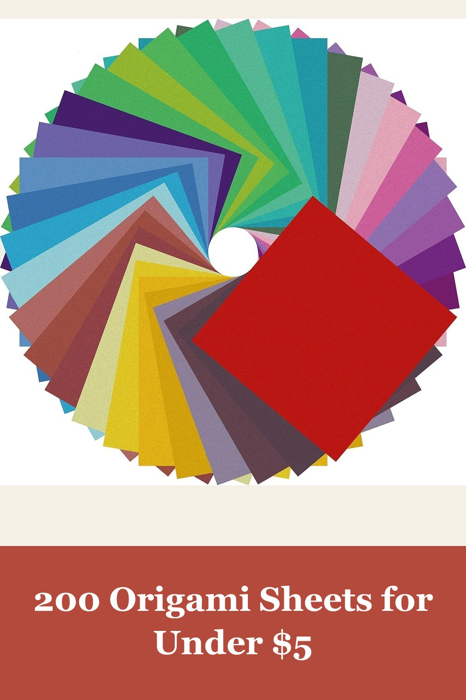
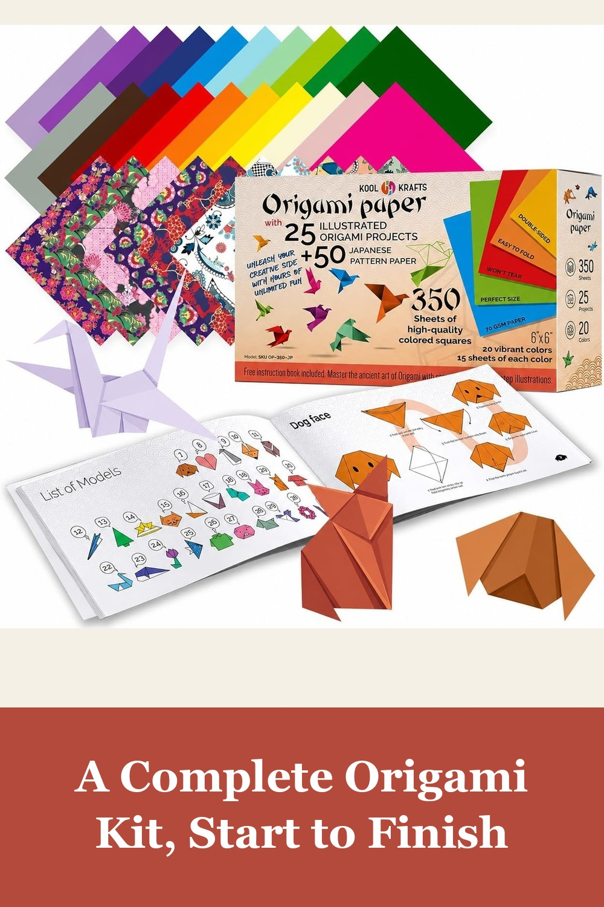
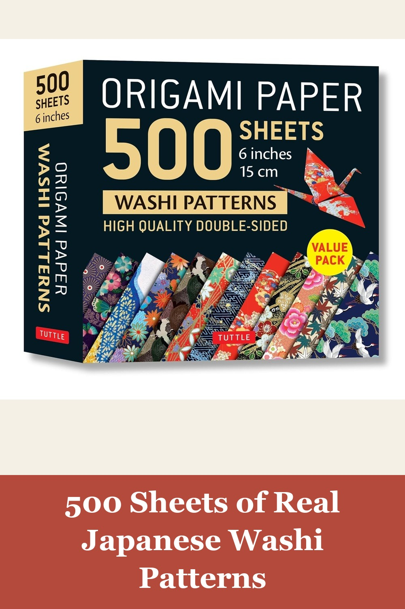
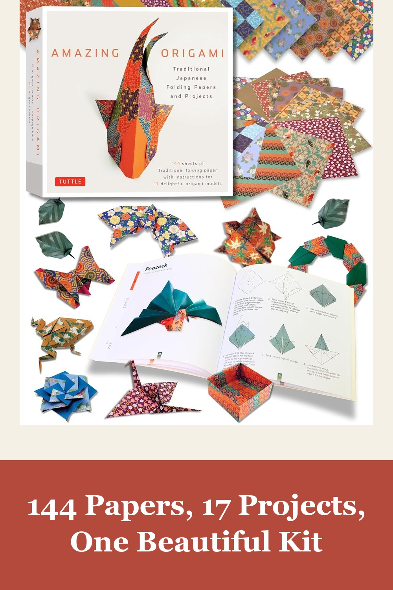

Origami Paper 200 Sheets 6x6 Inch Double Sided Colored Craft Paper
Vivid double-sided solid colors that hold a crisp fold — the everyday origami paper this project's shoppers reach for first, at 2,000+ bought a month.
Good color variety and easy to fold — great for beginners, kids, or simple craft projects.— verified Amazon buyer
View on Amazon →
Origami Paper 350 Kit with 50 Traditional Japanese Patterns
300 solid sheets plus 50 traditional Japanese pattern papers and an illustrated 25-project book — everything needed to go from first fold to finished piece.
This is my second time buying this set. My 10 year old has been making stuff with her set — she got so excited she requested I buy it for a friend's birthday gift.— verified Amazon buyer
View on Amazon →
Tuttle Origami Paper 500 Sheets, Japanese Washi Patterns
From Tuttle Publishing, a Japan-founded publisher since 1948 — 12 authentic washi designs, double-sided, made for origami artists who want the real pattern tradition.
I work as a nurse in a hospital with bored teen patients — origami is popular. You get a lot of paper and the designs are beautiful, a good bargain and excellent quality.— verified Amazon buyer
View on Amazon →
Amazing Origami Kit: Traditional Japanese Folding Papers and Projects
Delicate traditional Japanese prints with gold detailing, recalling kimono fabric designs — a full-color 64-page project booklet included, from Tuttle Publishing since 1948.
What a beautiful little kit! The paper is not too thick, it's nice and shiny, and the patterns/colors are gorgeous. The instructions are easy to follow and written clearly.— verified Amazon buyer
View on Amazon →